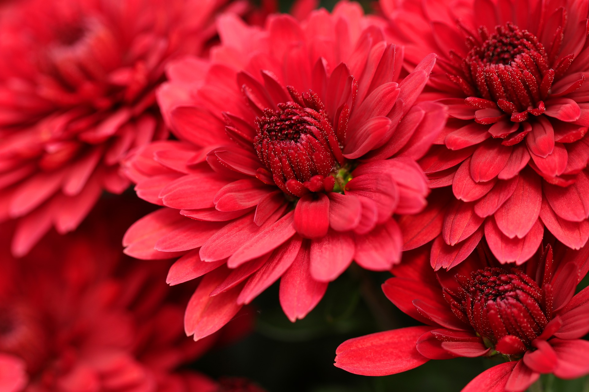
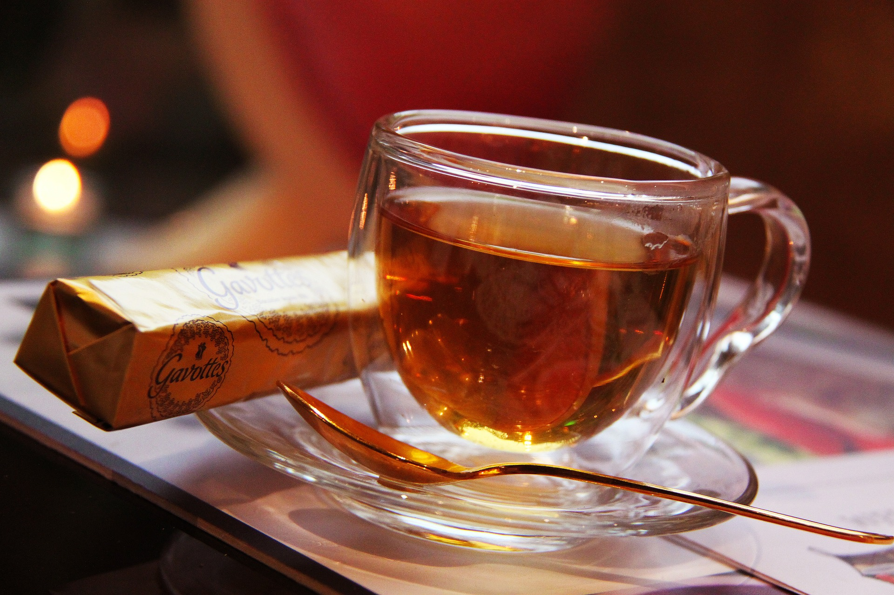
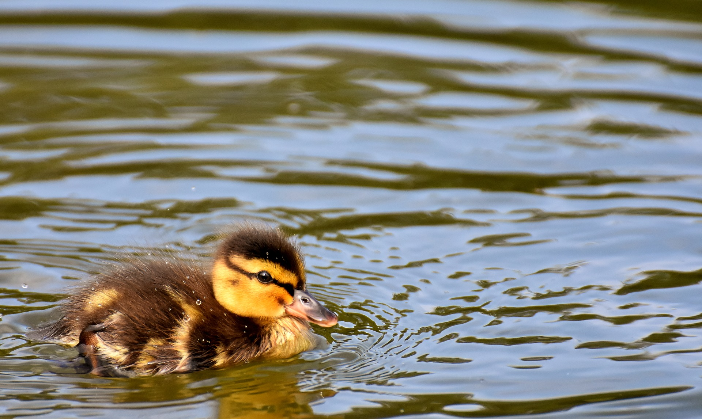

Hello, World! My name is Pooja.
This is a webpage all. about me. My likes, dislikes, hopes, dreams, and favorite things.
Biography
I am currently a senior in high school. I love to bake/cook (cupcakes, muffins, cookies, scones), play the piano, and listen to music, especially Taylor Swift and One Direction. I aspire to become a dentist (thinking of surgery) and hope to open up my own dental practice one day. A few fun facts about me are that I am a twin, I love watching football, and I have been playing the piano for about six years.
In my spare time, I enjoy binge-watching Netflix or Disney+. I love watching Marvel movies and medical shows. I also enjoy going to the mountains with my family because it is very relaxing and the weather is nice.
My Favorite Quotation:
"Be like a snake - only bite when someone steps on you." - Taylor Swift
My Favorite Foods
- Pizza
- Pasta
- Noodles
- Burritos
- Chicken Tenders
My Top Eight Favorite Avengers Movies, in order
- Avengers End Game
- Avengers Infinity War
- Spider-Man: Far From Home
- Black Panther
- Iron Man 3
- Captain America: The Winter Soldier
- Doctor Strange
- Spider-Man: No Way Home
Countries I'd Like to Visit, and What I'd Like To Do there
- Mexico
- Tour native lands and communities
- Eat traditional dishes
- Visit beaches
- Japan
- Eat authentic Japaneese food
- Look at cherry blossom trees
- Ride the bullet train
- Switzerland
- Eat Swiss chocolate
- Visit Rhine Falls
- Visit Chillon Castle
Other Favorite Things
| Favorite Flower | Chrysanthemum |  |
|---|---|---|
| Favorite Time of Day | Midnight | |
| Favorite Drink | Sweet Tea |  |
| Favorite Animal | Ducks |  |
| Favorite Song | All Too Well (Ten Minute Version) (Taylor's Version) - Taylor Swift | |
| Favorite Color | Light Pink |
Contact Information
Email: student@emailme.com
Phone: 123-456-7890